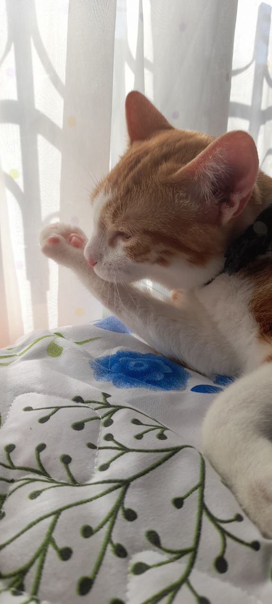
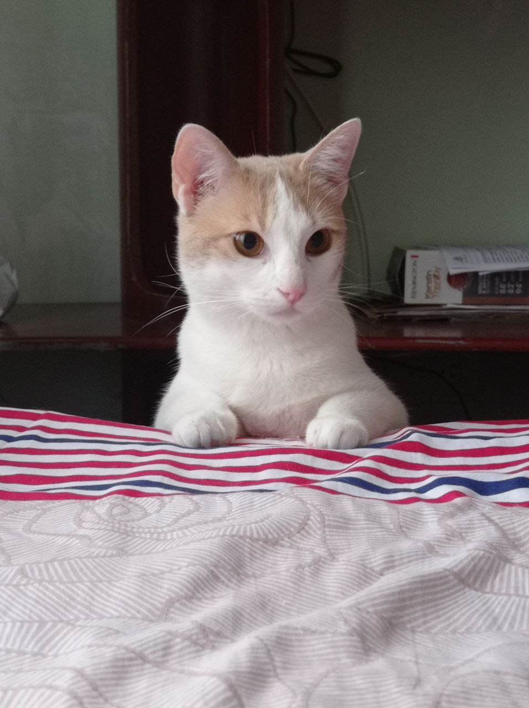
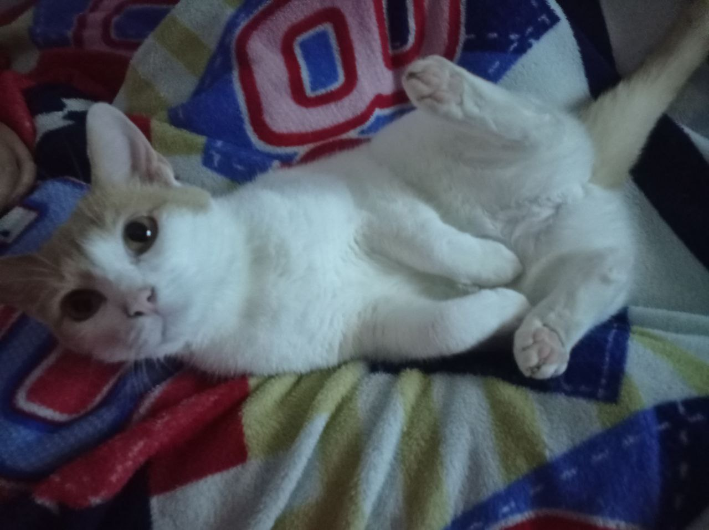

Te comparto curiosidades, fotos y detalles de la personalidad de cada uno de mis adorables gatitos. ¡Espero que los ames tanto como yo!

🐱 Tigger
🐾 Tigger es el consentido de la casa. Le fascina que lo acaricien y lo mimen, y tiene su propia cajita para arañar, donde se entretiene largo rato. Es el primero en buscarte cuando quieres descansar, porque sabe que ahí recibirá toda la atención que tanto disfruta.

🐾 Appa
🐾 Appa es el más inquieto y curioso del grupo. Le encanta explorar y hacer un poco de desorden: se sube a todo lo que puede, se esconde en los lugares menos esperados y convierte cualquier objeto en un juguete. Aun así, es un gatito muy aseado y siempre mantiene su pelaje impecable.

✨ Pandora
🐾 Pandora es la mamá de los dos y, como buena madre, valora su privacidad y su espacio. Tiene su camita personal donde se siente segura y relajada. Es muy tranquila, pero cuando quiere, también se une a los juegos con sus pequeños.